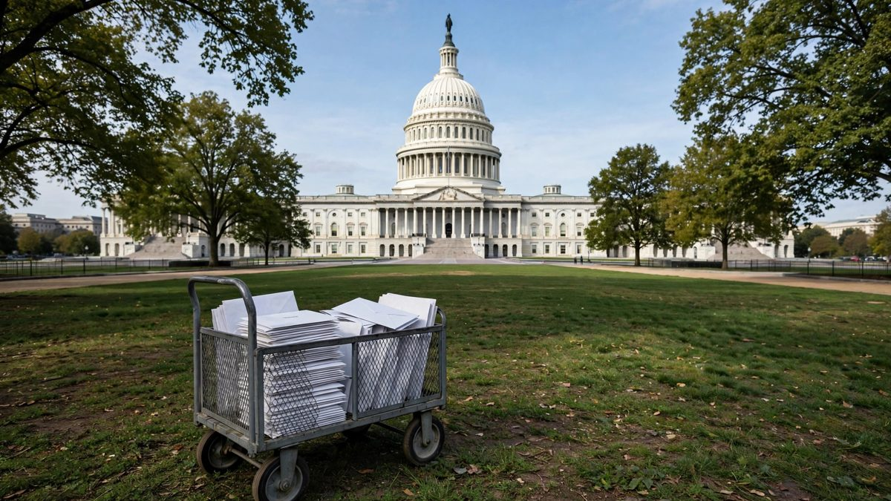

Le FBI enquete sur 100 lettres a la poudre blanche visees au Congres
Plus de trois douzaines de membres du Congres et des responsables electeurs dans au moins 15 Etats ont ete vises deux semaines avant les elections de mi-mandat. La plupart des lettres ont ete interceptees, les premiers tests n'ont revele aucun danger, et personne n'a ete blesse.

Points clés
- Les enqueteurs federaux examinent plus de 100 lettres suspectes envoyees a des membres du Congres et a des responsables electeurs dans tout le pays, deux semaines avant les elections de mi-mandat…
- Le FBI et le service d'inspection postale des Etats-Unis menent l'enquete.
- Des sources des forces de l'ordre ont dit a ABC News que plus de 100 lettres de ce type circulent dans le systeme postal americain.
Les enqueteurs federaux examinent plus de 100 lettres suspectes envoyees a des membres du Congres et a des responsables electeurs dans tout le pays, deux semaines avant les elections de mi-mandat du 3 novembre. Certaines lettres contenaient une poudre blanche. La plupart ont ete arretees avant d'arriver au bureau vise, et aucun blesse n'a ete signale.
Le FBI et le service d'inspection postale des Etats-Unis menent l'enquete. "Le FBI et le service d'inspection postale enquete sur une serie d'envois suspects adresses a diverses adresses dans tout le pays, notamment des bureaux de secretaires d'Etat et leurs bureaux electeurs, ainsi que des bureaux du Congres", a declare le FBI. "Certaines lettres contenaient une substance inconnue, et nous travaillons etroitement avec nos partenaires des forces de l'ordre pour repondre a chaque incident".
L'ampleur de l'envoi
Des sources des forces de l'ordre ont dit a ABC News que plus de 100 lettres de ce type circulent dans le systeme postal americain. Les rapports placent les cibles au Congres a plus de trois douzaines de membres, des deux partis. Le chef de la minorite au Senat, Chuck Schumer, figurait parmi les vises, et des lettres ont aussi ete envoyees vers les senateurs Alex Padilla, Chris Murphy, Mike Rounds, Pete Ricketts et Ted Cruz. A la Chambre, les bureaux de Hakeem Jeffries, Ritchie Torres et Tom Suozzi ont ete touches, et un employe du bureau de Santa Cruz du representant Jimmy Panetta a ouvert une enveloppe, fait evacuer la piece et appele le 911.
Les bureaux electeurs ont aussi ete vises, dans au moins 15 Etats a la fin de la semaine derniere. Les enqueteurs disent que les lettres partagent des traits communs. Elles sont passees par un centre postal du nord du Texas et portaient un cachet "Thinking of You", et le personnel a ete averti de surveiller les enveloppes blanches simples portant ces marques.
Bureaux evacues, tests negatifs pour l'instant
Le lundi 19 octobre, le bureau de Leesburg, en Virginie, du representant Suhas Subramanyam a ete evacue apres l'arrivee d'une enveloppe contenant une substance suspecte. Le bureau a ete rapidement degage et les tests preliminaires ont montre que la poudre n'etait pas dangereuse. "Les actes d'intimidation politique n'ont pas leur place dans notre pays", a dit Subramanyam.
Trois democrates de l'Arizona, les representants Adelita Grijalva, Greg Stanton et Yassamin Ansari, ont dit le 19 octobre que les forces de l'ordre les avaient informes pendant le week-end de lettres envoyees vers leurs bureaux. Les lettres pour Grijalva et Ansari etaient adressees a d'anciennes adresses, et celle de Stanton a ete interceptee avant livraison. Le bureau du FBI a Phoenix et le departement de la securite interieure de l'Arizona les ont alertes. "Nous ne nous laisserons pas intimider, et nous continuerons a faire le travail pour lequel les habitants de l'Arizona nous ont elus", ont ecrit les trois dans une declaration commune.
Dans le Kentucky, une enveloppe contenant une lettre et une substance blanche poudreuse a ete livree au bureau de la commission electorale de l'Etat a Frankfort le matin du 16 octobre. Taylor Brown, conseiller juridique de la commission, a dit au Courier Journal que les tests preliminaires ont montre que la substance n'etait pas dangereuse, meme si les enqueteurs n'ont pas encore dit ce que c'etait. "Nous prenons ces menaces au serieux, mais nous ne les laisserons pas empecher la tenue d'elections sures dans le Kentucky", a dit Brown.
Le schema a commence plus tot dans le mois. Le 15 octobre, la tour executive de l'Arizona, au Capitole de l'Etat a Phoenix, a ete evacuee apres que le personnel du bureau du secretaire d'Etat a ouvert une enveloppe contenant de la poudre blanche. Deux jours plus tot, le bureau du secretaire d'Etat de Louisiane a Baton Rouge avait signale un colis semblable. Des responsables electeurs de l'Ohio et de l'Oklahoma ont aussi signale des colis suspects debut octobre. Aucun blesse n'a ete signale dans aucun de ces cas.
Pourquoi cela compte
Les envois arrivent au moment le plus charge du calendrier electorale. Le vote anticipe est en cours dans de nombreux Etats, et les bureaux electeurs traitent bulletins et courrier a plein regime. Chaque enveloppe qu'il faut traiter comme une menace possible ralentit ce travail et attire police et equipes specialisees dans des batiments qui doivent rester ouverts. Brendan Donahue, inspecteur en chef adjoint du service d'inspection postale, a dit que le service s'engage a proteger les responsables electeurs contre le courrier menaçant et mettra toutes ses ressources dans l'enquete.
Il existe un precedent recent pour mesurer l'affaire. Pres des elections de novembre 2024, des lettres a la poudre blanche ont ete envoyees a des responsables electeurs de 16 Etats, et la poudre s'est revelee etre de la farine ou du bicarbonate. Pres des elections de novembre 2023, des lettres envoyees a des bureaux electeurs de Georgie, d'Oregon et de Washington contenaient des traces de fentanyl et ont perturbe le depouillement, sans blesser personne. Les lettres a l'anthrax de 2001, qui ont tue cinq personnes, expliquent pourquoi toute poudre blanche dans une enveloppe officielle est traitee comme dangereuse tant qu'un laboratoire n'a pas dit le contraire.
La suite
Aucun suspect n'a ete nomme et aucun total n'a ete confirme publiquement. Les enqueteurs remontent la piste a partir des traits communs des lettres, avant tout le point de traitement du nord du Texas. Les bureaux du Congres ont recu des consignes sur le courrier suspect, et les responsables electeurs des Etats touches controlent les livraisons. Les questions ouvertes sont qui a envoye les lettres, si toutes contenaient la meme substance, et s'il en reste d'autres en route dans le courrier.
Chronologie
- Oct 13, 2026Le bureau du secretaire d'Etat de Louisiane a Baton Rouge signale un colis contenant de la poudre blanche.
- Oct 15, 2026La tour executive de l'Arizona a Phoenix est evacuee apres que le personnel du secretaire d'Etat a ouvert une enveloppe de poudre blanche. Le FBI annonce son enquete avec le service d'inspection postale.
- Oct 16, 2026Une enveloppe avec une substance blanche poudreuse est livree au bureau de la commission electorale du Kentucky a Frankfort. Les tests preliminaires montrent qu'elle n'est pas dangereuse.
- Oct 19, 2026Trois representants democrates de l'Arizona disent que les forces de l'ordre les ont informes de lettres envoyees vers leurs bureaux. Le bureau du representant Suhas Subramanyam a Leesburg, en Virginie, est evacue puis degage.
- Oct 20, 2026Des rapports citant des sources des forces de l'ordre placent le total a plus de 100 lettres, avec plus de trois douzaines de membres du Congres vises et des bureaux electeurs touches dans au moins 15 Etats.
Sources
- CBS News via WGHN: Feds probing suspicious letters to election officials, lawmakers
- ABC News via QNC News: White powder envelopes sent to offices of more than three dozen Congress members
- Arizona Republic: FBI investigating suspicious letters sent to 3 Arizona Democrats
- Newsmax: White powder letters target more than 3 dozen lawmakers